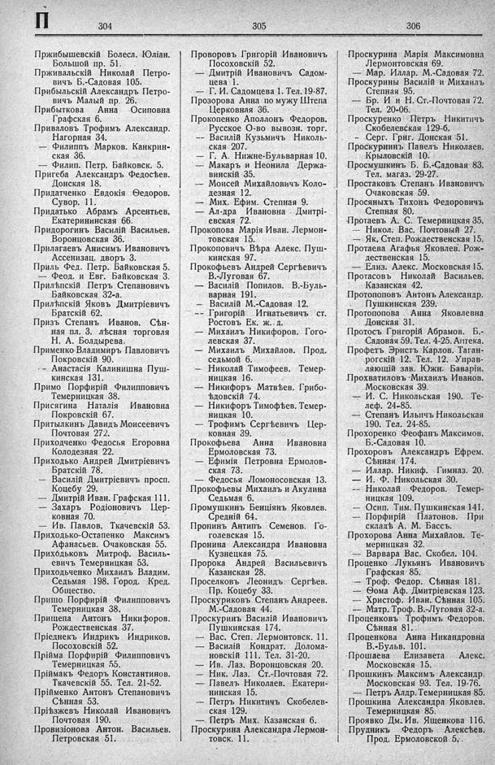

Лист источника 452
Скан

Распознанный текст
П 304
Пржибышевскій Болесл. Юліан.
Большой пр. 51.
Прживальскій Николай Петро-
вичъ Б.-Садовая 105.
Прибыльскій Александръ Петро-
вичъ Малый пр. 26.
Прибыткова Анна Осиповна
Графская 6.
Приваловъ Трофимъ Александр.
Нагорная 34.
— Филиппъ Марков. Канкрин-
ская 36.
— Филип. Петр. Байковск. 5.
Пригеба Александръ Федосѣев.
Донская 18.
Придатченко Евдокія Ѳедоров.
Сувор. 11.
Придатько Абрамъ Арсентьев.
Екатерининская 66.
Придорогинъ Василій Васильев.
Воронцовская 36.
Прилагаевъ Анисимъ Ивановичъ
Ассенизац. дворъ 3.
Приль Фед. Петр. Байковская 5.
— Феод. и Евг. Байковская 3.
Прилѣпскій Петръ Степановичъ
Байковская 32-а.
Прилѣпскій Яковъ Дмитріевичъ
Братскій 62.
Призъ Степанъ Иванов. Сѣн-
ная пл. 3. лѣсная торговля
Н. А. Болдырева.
Применко Владимиръ Павловичъ
Покровскій 90.
- - Анастасія Калинишна Пуш-
кинская 131.
Примо Порфирій Филипповичъ
Темерницкая 38.
Присягина Наталія Ивановна
Покровскій 67.
Притылкинъ Давидъ Моисеевичъ
Почтовая 272.
Приходченко Федосья Егоровна
Колодезная 22.
Приходько Андрей Дмитріевичъ
Братскій 78.
— Василій Дмитріевичъ просп.
Коцебу 29.
— Дмитрій Иван. Графская 111.
— Захаръ Родіоновичъ Цер-
ковная 70.
— Ив. Павлов. Ткачевскій 53.
Приходько-Остапенко Максимъ
Афанасьев. Очаковская 55.
Приходьковъ Митроф. Василь-
евичъ Темерницкая 53.
Приходьченко Михаилъ Владим.
Седьмая 198. Город. Кред.
Общество.
Пришо Порфирій Филипповичъ
Темерницкая 38.
Прищепа Антонъ Никифоров.
Рождественская 37.
Пріеднекъ Индрикъ Индриков.
Посоховскій 52.
Прійма Порфирій Филипповичъ
Темерницкая 55.
Пріймакъ Федоръ Константинов.
Ткачевскій 55. Тел. 21-52.
Прійменко Антонъ Степановичъ
Сѣнная 53.
Пріѣзжевъ Николай Ивановичъ
Почтовая 190.
Провизіонова Антон. Васильев.
Петровская 51.
305
Проворовъ Григорій Ивановичъ
Посоховскій 52.
— Дмитрій Ивановичъ Садом-
цева 1.
— Г. И. Садомцева 1. Тел. 19-87.
Прозорова Анна по мужу Штепа
Церковная 36.
Прокопенко Аполлонъ Федоров.
Русское О-во вывозн. торг.
- - Василій Кузьмичъ Николь-
ская 207.
— Г. А. Нижне-Бульварная 10.
Макаръ и Неонила Держа-
винскій 35.
— Моисей Михайловичъ Коло-
дезная 12.
— Мих. Ефим. Степная 9.
— Ал-дра Ивановна Дмитрі-
евская 72.
Прокопова Марія Иван. Лермон-
товская 15.
Прокоповичъ Вѣра Алекс. Пуш-
кинская 97.
Прокофьевъ Андрей Сергѣевичъ
В.-Луговая 67.
— Василій Попилов. В.-Буль-
варная 191.
— Василій М.-Садовая 12.
- - Григорій Игнатьевичъ ст.
Ростовъ Ек. ж. д.
— Михаилъ Никифоров. Гого-
левская 37.
— Михаилъ Михайлов. Прод.
седьмой 6.
— Николай Тимофеев. Темер-
ницкая 16.
— Никифоръ Матвѣев. Грибо-
ѣдовскій 74.
— Никифоръ Тимофѣев. Темер-
ницкая 10.
— Трофимъ Сергѣевичъ Цер-
ковная 39.
Прокофьева Анна Ивановна
Ермоловская 73.
— Ефимія Петровна Ермолов-
ская 73.
— Федосья Ломоносовская 13.
Прокофьевы Михаилъ и Акулина
Седьмая 6.
Промушкинъ Бенціянъ Яковлев.
Средній 64.
Пронинъ Антипъ Семенов. Го-
голевская 15.
Пронина Александра Ивановна
Кузнецкая 75.
Пророка Андрей Васильевичъ
Казанская 28.
Проселковъ Леонидъ Сергѣев.
Пр. Коцебу 33.
Проскуриковъ Степанъ Андреев.
М.-Садовая 44.
Проскуринъ Василій Ивановичъ
Пушкинская 174.
— Вас. Степ. Лермонтовск. 11.
— Василій Кондрат. Долома-
новскій 111. Тел. 31-20.
— Ив. Лаз. Воронцовская 20.
— Ник. Лаз. Ст.-Почтовая 72.
— Павелъ Николаев. Екатери-
нинская 15.
— Петръ Никитичъ Скобелев-
ская 129.
— Петръ Мих. Казанская 6.
Проскурина Александра Лермон-
товск. 11.
306
Проскурина Марія Максимовна
Лермонтовская 69.
— Мар. Иллар. М.-Садовая 72.
Проскурины Василій и Михаилъ
Степная 95.
— Бр. И и Н. Ст.-Почтовая 72.
Тел. 20-06.
Проскуренко Петръ Никитичъ
Скобелевская 129-б.
- Серг. Григ. Донская 51.
Проскурнинъ Павелъ Николаев.
Крыловскій 10.
Просмушкинъ Б. Б.-Садовая 83.
Тел. магаз. 29-27.
Простяковъ Степанъ Ивановичъ
Очаковская 59.
Просяныхъ Тихонъ Федоровичъ
Степная 80.
Протаевъ А. С. Темерницкая 35.
— Никол. Вас. Почтовый 27.
— Як. Степ. Рождественская 15.
Протаева Агафья Яковлев. Рож-
дественская 15.
— Елиз. Алекс. Московская 15.
Протасовъ Николай Васильев.
Казанская 42.
Протопоповъ Антонъ Александр.
Пушкинская 239.
Протопопова Анна Яковлевна
Донская 31.
Протосъ Григорій Абрамов. Б.-
Садовая 59. Тел. 4-25. Аптека.
Профетъ Эристъ Карлов. Таган-
рогскій 12. Тел. 12. Управ-
ляющій зав. Южн. Баваріи.
Прохватиловъ Михаилъ Иванов.
Московская 39.
— И. С. Никольская 190. Те-
леф. 24-85.
— Степанъ Ильичъ Никольская
190. Тел. 24-85.
Прохоренко Феофанъ Максимов.
Б.-Садовая 10.
Прохоровъ Александръ Ефрем.
Сѣнная 174.
— Иллар. Никиф. Гимназ. 20.
— И. Ф. Никольская 30.
- - Николай Федоров. Темер-
ницкая 109.
— Осип. Тим. Пушкинская 141.
— Порфирій Платонов. При
складѣ А. М. Бассъ.
Прохорова Анна Михаилов. Те-
мерницкая 32.
— Варвара Вас. Скобел. 104.
Проценко Лукьянъ Ивановичъ
Графская 85.
— Троф. Федор. Сѣнная 181.
— Ѳома Аф. Дмитріевская 123.
— Христоф. Иван. Сѣнная 105.
— Матр. Троф. В.-Луговая 32-а.
Проценковъ Трофимъ Федоров.
Сѣнная 81.
Проценкова Анна Никандровна
В.-Бульв. 101.
Прошаева Елизавета Алекс.
Московская 15.
Прошкинъ Максимъ Александр.
Московская 93. Тел. 19-76.
— Петръ Алдр. Темерницкая 85.
Прошкина Александра Яковлев.
Темерницкая 85.
Проявко Дм. Ив. Ященкова 116.
Прудникъ Федоръ Алексѣев.
Прод. Ермоловской 5.